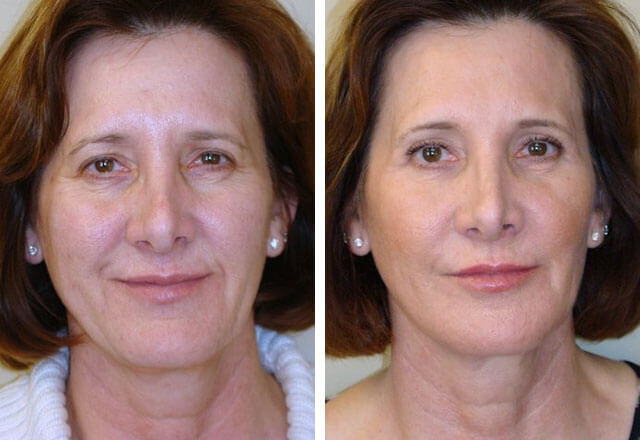
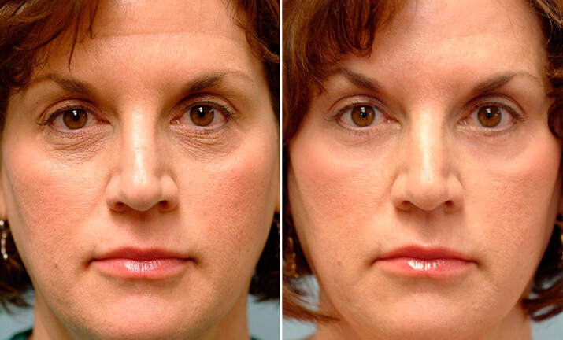

Ciao a tutti! Sono Federica, ho 40 anni e sono madre di sette figli. Non scherzo! La gente spesso mi chiede: sei sicura che sia la tua vera età? Io rispondo, quanto è vero che sono tutti miei figli. E qualunque cosa possano dire le malelingue, non ho subito alcun intervento di chirurgia plastica, lo giuro :). Il segreto della giovinezza è molto semplice - essere felice, portare luce e amore nel mondo, amare te stesso e la tua famiglia!
Parlando di cura personale, io non uso creme costose e non mi fido molto delle estetiste. Sono soddisfatta del mio unico prodotto di bellezza - "". Siamo insieme da diversi anni, e non la cambierei per nulla al mondo. Perché? Beh, vi dirò perché:)
Come la maggior parte delle trentenni, le rughe hanno fatto la loro comparsa sul mio viso, e la pelle ha perso la sua elasticità, anche se ho cercato duramente di ripristinare la freschezza che aveva prima. Ho provato praticamente tutto quello che avevo a portata di mano: creme, maschere, emulsioni, da quelle più costose a quelle di base del supermercato. Non che abbia sentito che molta differenza tra di loro. Poi mi sono precipitata dall'estetista. Dopo ore di massaggio, peeling e iniezioni ho visto i risultati. Ma ho anche capito in fretta che se non mi fermo, sarò sempre dipendente da questi trattamenti! Ragazze, vi dirò un segreto - il settore della bellezza gira solo intorno ai guadagni dei saloni di bellezza, non si preoccupa di mantenere il corpo giovane! Chiunque sia mai stato dal "dottore" sa che di solito il trattamento non si limita a una visita. Ti prescrivono 20 trattamenti diversi da 10 sessioni ciascuno, e in più vi esortano ad acquistare cosmetici costosi per uso domestico. Suona familiare? Capite cosa voglio dire, sono tutte bugie! C'è un modo migliore e più semplice per mantenere un aspetto giovane, ed è solo questione di trovare la crema perfetta;)
Ho scoperto "" per caso. Un giorno d'inverno, ho chiamato un'amica. Poco prima, ero andata a fare una passeggiata e l'aria fredda invernale mi ha fatto spellare il viso. Le ho chiesto se conosceva una crema idratante. Come avrete potuto immaginare, la mia amica mi ha suggerito ""))). Me ne sono innamorata quasi immediatamente. Solo in pochi minuti la mia pelle squamata e bruciata dal vento e dal freddo è guarita. Sembrava e la sentivo perfettamente nutrita, liscia ed elastica. Sono rimasta basita! :)
Io non so voi, ma io sono abituata a fare shopping online, è più veloce, più facile, e per di più si può sempre essere sicuri della qualità, a condizione che si ordini nel negozio online del produttore. Quindi, sono stata molto felice di scoprire che "" può essere ordinata da casa attraverso il sito ufficiale.
E solo pochi giorni dopo, avevo in mano il mio pacchettino!
Mi è piaciuta la crema fin da subito. Ma allora non ero a conoscenza della sua caratteristica principale. Non è solo un ottimo idratante e nutriente. Essa ha anche un notevole effetto cumulativo. Giorno dopo giorno, "" rende la pelle più curata, giovane ed elastica. Tanti benefici in una crema sola: protegge, nutre, idrata e leviga le rughe, elimina la pigmentazione, struttura la pelle e oltre a tutto questo, ha un effetto lifting! "" ha sostituito decine di barattoli sul mio comodino. Uno per tutti !!! :)))
Naturalmente, la magia non avviene dal giorno alla notte - ci ho messo circa un mese per sbarazzarmi di tutti i segni dell'invecchiamento. Ora sono molto felice quando mi guardo allo specchio, e tenete presente, senza alcuna estetista! Grazie a "" ho risparmiato un sacco! Io preferisco spendere soldi per viziare i miei cari piuttosto che regalarli a degli sconosciuti :)
Ebbene, mie care e belle lettrici! Non ho mai amato le pubblicità, ma vi consiglio vivamente di provare almeno una volta ""! Sono sicura che anche per voi sarà amore a prima vista. Questa è una vera e propria svolta nel mondo della cura della pelle, ripristinerà la vostra giovinezza e andrà a sostituire decine di trattamenti costosi! E il prezzo conviene!
Ultimo ma non meno importante, ecco il link prezioso dello shop online del produttore :) Se avete provato questa crema, parliamone insieme! Sarò molto felice di leggere dei vostri risultati! :)
Ciao Federica, seguo il tuo blog da un bel po'. Mi chiedevo che tipo di prodotti per la cura del viso usi. Ti ringrazio per la risposta dettagliata!
Molto istruttivo, Federica! Sono completamente d'accordo con quello che dici sulle estetiste. Vogliono solo cavarti dei soldi!
Ho qualcosa da aggiungere! Uso "" da tanto ormai. Deve essere la mia quinta confezione!!! E' una crema magica, mai trovato niente di meglio! Liscia anche le rughe più profonde. E, sì, sono pienamente d'accordo, sostituisce decine di trattamenti e prodotti costosi !
Anch'io la uso e la adoro! E' allo stesso livello di qualsiasi prodotto professionale e di lusso, ma meno costoso, non c'è dubbio su questo!
Sento spesso parlare di questa crema, ma non sono mai riuscita a scoprire dove comprarla. Grazie per il link! Faccio anch'io acquisti online :)
Vi metto qui di seguito le foto del "prima" e "dopo". Fa una differenza enorme sulla faccia! ;-)
E' ottima, prima la compravo online, ma poi hanno terminato le scorte e non l'ho più trovata. Non ero a conoscenza del sito ufficiale :) Non mancherò di ordinarla!
Federica, sei bellissima! Non riesco ancora a credere alla tua età! Sembra che questa crema sia davvero magica!
Oh "" !!! La adoro! Fa davvero tornare indietro le lancette. I miei amici pensano anche che abbia fatto un intervento di chirurgia plastica. Ma è solo merito di questa crema!
Accidenti, non riesco a trovare un buon prodotto per la cura del viso. Niente mi dà dei risultati e basta!
Penso che dovrei anch'io provare "", ho sentito tanti pareri positivi. Ragazze, le vostre foto mi fanno sentire invidiosa. Voglio anch'io ringiovanire!
Ho comprato questa crema appena una settimana fa! Riesco già vedere l'effetto! La pelle è diventata bella e ben curata! Le rughe di espressione si sono appianate!
Ciao a tutti! Io non uso questa crema ma mia madre sì e le piace tantissimo. A lei non dispiace se condivido le sue foto:
Stupenda! La ordinerò col mio prossimo stipendio !!!
Niente male! Naturalmente, se la situazione è grave e la chirurgia plastica è veramente necessaria, la crema non andrà a sostituirla. Ma si continua a sembrare almeno di 10 anni più giovani, questo è sicuro :) E probabilmente non funzionerà per le 50-60enni, ma aiuterà le donne di 30 e 40 anni a sbarazzarsi delle prime rughe, questo è quello che vi serve! Il tono della pelle aumenta visibilmente, migliora la micro-circolazione e soprattutto, i suoi ingredienti penetrano negli strati più profondi del derma. Da estetista, posso assicurarlo :)
Non tutte le estetiste sono del tutto inutili)))) Grazie per le informazioni, ragazze! La esaminerò meglio!
Ciao Federica! Come richiesto, ecco la mia recensione. La crema è fantastica, non posso lamentarmi. Non ostruisce i pori e non provoca allergie. Foto in basso.